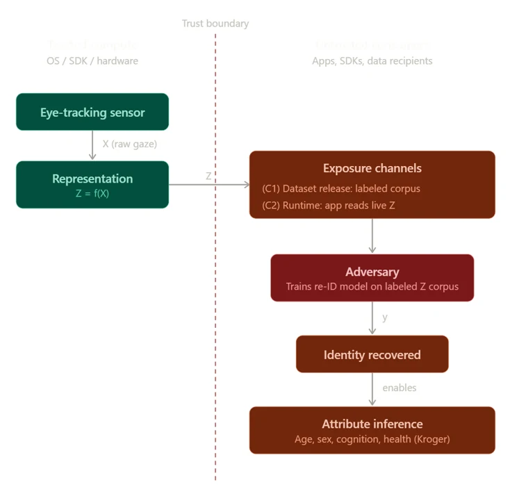

Intelligent extended reality (XR) systems increasingly use eye and head tracking to infer user intent, task, and attention, but the same signals can also reveal biometric identity. We systematically study whether gaze representation choice can serve as a lightweight privacy control at feature extraction, before adding perturbation or formal privacy mechanisms. Using the egocentric HoloAssist dataset, we compare three gaze representations under matched model capacity: raw gaze, temporal attention heatmaps, and engineered eye-movement features. We evaluate each representation on action recognition as task utility and closed-set user re-identification as privacy leakage. Representation choice substantially changes the privacy–utility tradeoff. Engineered features retain roughly 85% of raw gaze’s action-recognition accuracy while reducing re-identification by about an order of magnitude, to roughly four times the chance rate across 206 identities. This reduction attenuates rather than eliminates identity leakage, and the differences across representations show that abstraction alone does not guarantee privacy. Engineered features expose interpretable and auditable structure, giving designers a transparent privacy lever that complements mechanisms such as differential privacy.
Re-encode the permitted signal — keep the use, shed the identity. The Veil as representation design.
Egocentric HoloAssist dataset · 206 identities · three representations under matched model capacity.
Engineered features keep ≈85% of task utility while re-identification falls ~10× — to roughly 4× chance.
The more abstract heatmap leaks more identity — abstraction alone is not privacy. The veil must be engineered.
